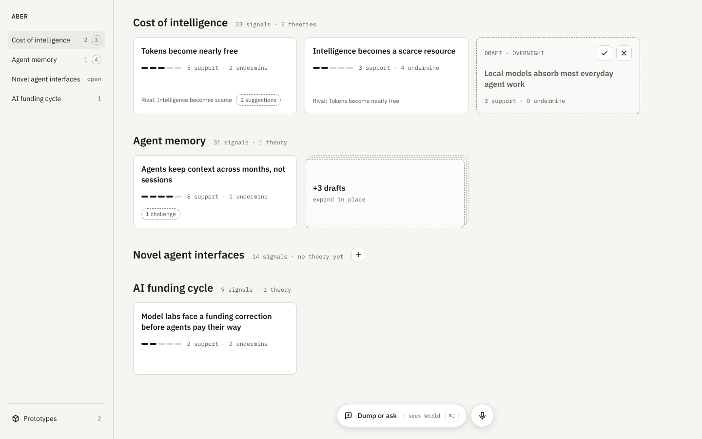

One section per theme with its theories as cards; open themes show an inline + to state a theory; drafts sit at the end of their section and collapse into a ghost stack past three. Works for a handful of themes.
boards/WorldA.html · 1440×900 · source source/Main.dc.html